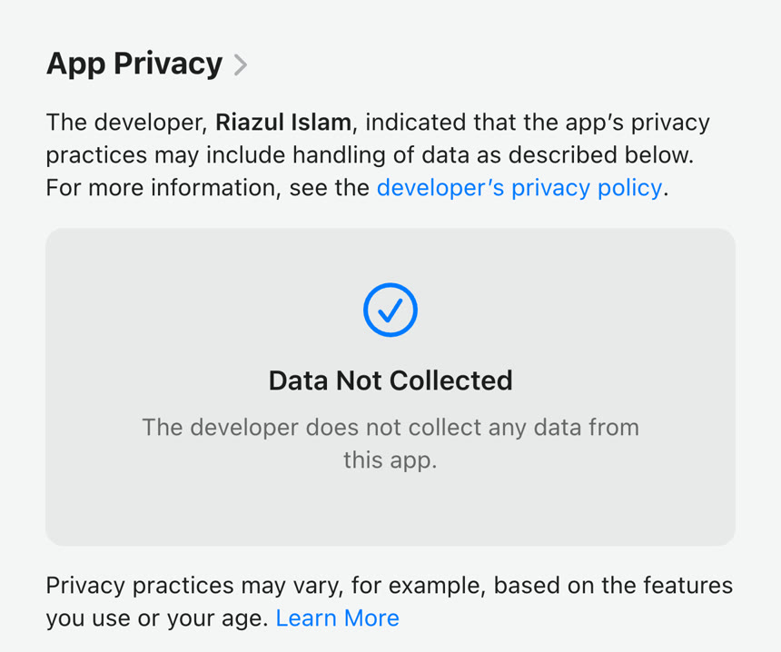
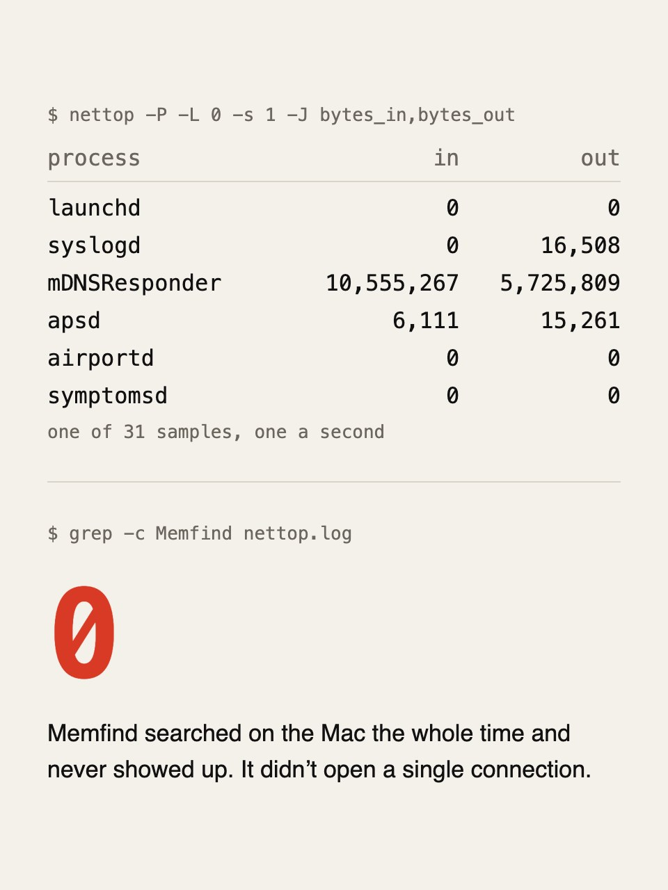
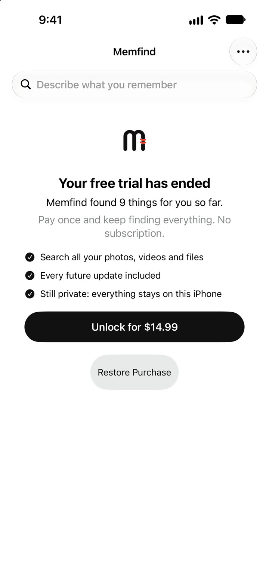

At the counter, with the code half remembered.
Searched for: K7Q2LM
you type this
Codes, names and amounts match exactly, including the words inside your screenshots. You type the six letters and it’s the first thing you see.
Memfind searches your photos, screenshots, PDFs and voice memos by what’s in them, on your iPhone, iPad and Mac. Nothing leaves the device.
Free for 7 days, then one payment.
Five things it found, below
Searched for: K7Q2LM
you type this
Codes, names and amounts match exactly, including the words inside your screenshots. You type the six letters and it’s the first thing you see.
uncut, ~3,000 photos
Searched for: our dog at the beach with the red collar
Write it the way it comes to you. Memfind matches what is in the photo, not what the file is called.
Searched for: ভাড়ার রসিদ মার্চ
Search in Bengali and it finds the receipt, even though it was written by hand. Arabic works the same way.
Searched for: how much was the electricity bill in august
A PDF opens on the page that matched, with the passage marked. You don’t scroll through the other three.
Searched for: how many times a day to take the amoxicillin
Recordings play from near the moment you asked about, so you hear the answer without the first two minutes.
It searches the folders you point it at and your photo library, opens a PDF on the page, and you can drag the result straight into a message.
On iPad it’s the same app with more room. One purchase covers iPhone, iPad and Mac.

wi-fi off, no signal

There’s no account to make. Your photos and files are read on the device and the index stays there. There are no ads and nothing tracks what you search.
One exception: the first launch downloads the search model, about 865 MB. That download carries none of your data.
Photos · Screenshots · Videos · PDFs · Plain text · Markdown · RTF · Web pages · Voice memos · Audio you share to it · Folders you choose · The Share sheet · Spotlight · English · Bengali · Arabic · Receipts · Booking codes · Amounts · Names
It’s good at photos, and describing them works on iPhone 15 Pro and newer, in the languages Apple Intelligence supports. Bengali and Arabic aren’t among them yet. PDFs and recordings aren’t part of it.
It describes photos well, in many languages, on any phone. To do that, your library is uploaded to Google. It doesn’t open PDFs on a page or play a recording from a moment.
Photos, PDFs and recordings in one search, on iPhone 11 and newer, in Bengali and Arabic too. Everything stays on the device. $14.99 once, after a week free.
Checked November 2026.
Use everything free for 7 days first. No subscription.
iPhone and iPad with iOS 26 or later. Mac with macOS 26 or later. One purchase covers all three.

No. Searching and indexing happen on the device. The only network request is the one-time download of the search model, and it carries none of your data.
Photos, screenshots and videos from your library, PDFs, text documents, Markdown, RTF and web pages from folders you choose, and voice memos and audio you share to it.
About 865 MB on first launch, so use Wi-Fi. After that it works offline.
It reads your library while it’s open and can carry on overnight while your device charges. It pauses by itself when the device is hot or the battery is low.
No. Use everything free for 7 days, then one payment unlocks it for good, on iPhone, iPad and Mac.
I made Memfind because I kept losing things I had photographed on purpose. A booking code, a receipt, a page of a form. They were all on my phone. I just couldn’t get to them when someone was waiting.
It’s one person’s app, built in Dhaka. If something doesn’t work for you, write to me from the support page and I’ll read it.
— Riazul